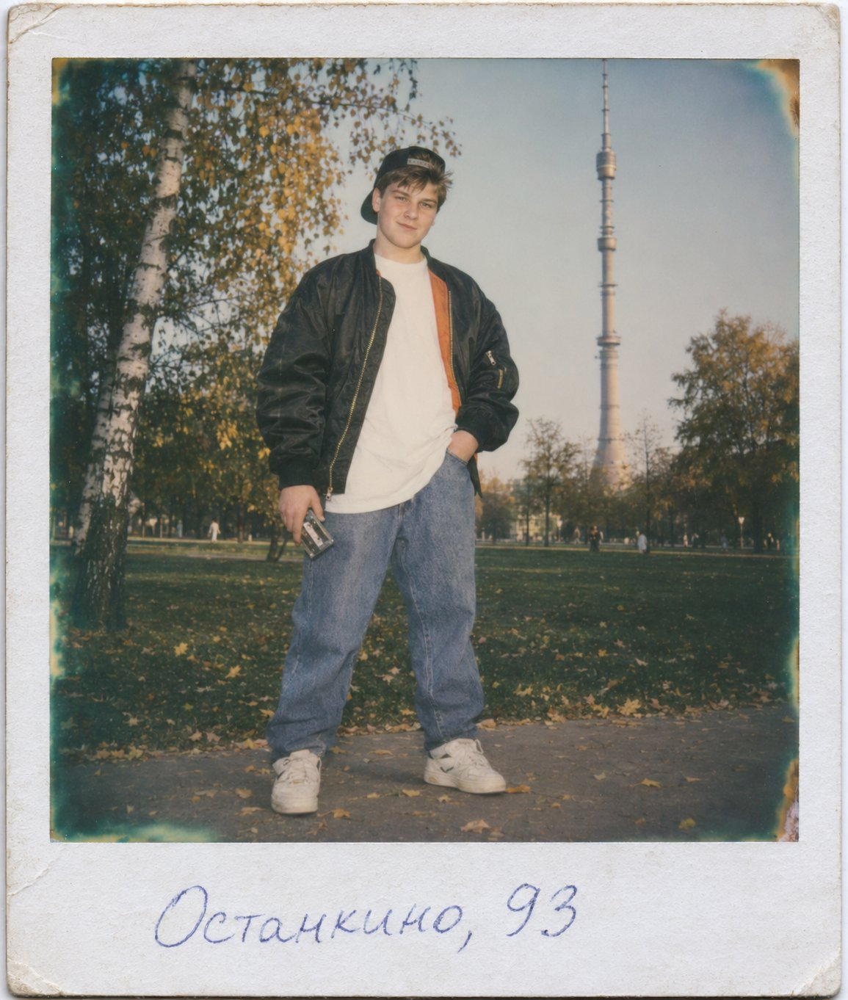

Максим. Москва, октябрь 1993

Парень за раскладным столиком смотрел на Максима так, как смотрят на голубя, который сел на чужую скамейку: без злобы и без интереса.
— Полторы, — сказал он.
— Вчера была тыща двести, — сказал Максим.
— Вчера была суббота.
— А сегодня воскресенье, и что, Onyx за ночь лучше стал?
Парень пожал плечами и не ответил. Перед ним на клеёнке рядами лежали кассеты, у каждой на обложке цветная ксерокопия, иногда кривая, с чужим шрифтом и с ошибками в названиях песен. Onyx был в третьем ряду, слева: обритые наголо парни в чёрном, злые лица, глаза в камеру. Максим смотрел на эту обложку с августа, когда первый раз услышал их у Гоши, у которого старший двоюродный брат привёз из Польши настоящую фирменную кассету и дал переписать на один вечер. Переписанная у Гоши шипела. Здесь, Максим знал, тоже переписанная, только на машине и с ксерокопией, но шипеть должна была меньше.
— Тыща двести, — повторил он. — И ещё я у тебя в следующий раз Cypress Hill возьму.
— В следующий раз и поговорим.
— Пошли, — сказал Гоша и потянул Максима за рукав. — Вон у того, в кепке, тоже есть.
У того, в кепке, Onyx не было, он вообще торговал пластинками и смотрел на подростков с таким презрением, будто они пришли покупать у него пиво. Максим вернулся к первому через десять минут, купил за тысячу триста, и оба остались довольны: продавец потому, что не за тысячу двести, а Максим потому, что не за полторы.
Горбушка гудела. Вдоль аллеи от ДК Горбунова стояли столики, раскладушки, ящики, просто газеты, расстеленные на асфальте, и на всём этом лежали кассеты, пластинки, плакаты, нашивки, значки и редкие компакт-диски в прозрачных коробках, на которые Максим даже не смотрел: у них дома проигрывать их было не на чем, а стоили они как полкассетника. Люди ходили медленно, вглядываясь, будто искали знакомое лицо. Где-то орал магнитофон, на два голоса, потому что два продавца рядом включили каждый своё и не уступали друг другу. Пахло пирожками, бензином и осенней землёй из-под деревьев.
Максим ездил сюда с прошлой осени, сначала с отцом, который однажды взял его посмотреть на «капитализм в чистом виде», как он выразился, а потом сам, по выходным, с Гошей или в одиночку. Отец тогда ходил между рядами с таким лицом, будто попал на свалку, где все вещи вдруг заговорили. А Максиму понравилось сразу. Здесь всё было понятно: тот, кто знает, что почём, покупает, а тот, кто не знает, переплачивает. Как в физике у отца, только быстрее и без формул.
У выхода к метро стояли трое продавцов постарше, курили, и один держал у уха маленький приёмник. Максим прошёл мимо и услышал, как другой сказал:
— Опять у Белого дома. Говорят, прорвали.
— Да ну их, — сказал третий. — Пускай друг друга хоть поубивают. Нам-то что.
— Нам торговать, — сказал первый, не отрываясь от приёмника. — Если в центре начнётся, в следующую субботу никто не приедет.
Гоша посмотрел на Максима, Максим пожал плечами. Про Белый дом говорили уже две недели, с тех пор как Ельцин распустил депутатов указом, а депутаты не разошлись, и теперь по телевизору каждый вечер показывали одно и то же: оцепление, колючую проволоку, бородатых мужиков у костров, старух с портретами Ленина. Мама переключала, папа смотрел, молча и долго, и иногда говорил, что все они там одним миром мазаны. Максим смотрел вместе с ним, пока не надоедало. Надоедало быстро. Про Белый дом было непонятно, кто прав, и, похоже, этого не знал никто, даже те, кто стоял у костров.
⁂
До дома ехали через кольцо, с пересадкой на «Киевской» и на «Проспекте Мира», час с лишним. В вагоне было мало народу, и Гоша, не дожидаясь, пока Максим сам предложит, вытащил у него из кармана кассету и стал читать названия песен на вкладыше, громко, по слогам, с таким произношением, что женщина напротив подняла голову от книги.
— Отдай, — сказал Максим.
— Тут написано, что это «Бакдафакап», — сказал Гоша. — Ты знаешь, что это значит?
— Знаю.
— Ну и что?
— Тебе нельзя, ты маленький.
Гоша был старше его на два месяца и выше на полголовы, и сказать ему «маленький» значило начать драку, но драться в вагоне им обоим было лень. Гоша отдал кассету и сказал, что спросит у Максимовой мамы, раз она английский преподаёт. Максим сказал, что если он спросит у его мамы, то он, Максим, спросит у Гошиной мамы, кто курил за гаражами в пятницу. На этом обмен любезностями закончился, и до «Проспекта Мира» они ехали молча, разглядывая рекламу на стенах вагона: там было написано про какую-то биржу.
На «Проспекте Мира», на эскалаторе, Максим увидел, что впереди, ступенек через пять, пожилой мужчина в шляпе держит у уха приёмник, как тот продавец на Горбушке. Вокруг него стояли люди, вплотную, и слушали, наклонив головы, как будто приёмник был чем-то вроде костра, у которого греются. Когда эскалатор кончился, мужчина отошёл в сторону, и несколько человек отошли вместе с ним. Максим задержался на секунду, но услышал только треск и голос, который быстро говорил что-то про мэрию.
— Ну, — сказал Гоша, — интересно.
— Тебе всё интересно.
— А тебе нет?
Максиму было интересно. Но он не хотел, чтобы это было видно, а почему не хотел, он и сам не знал. Может быть, потому что интерес к таким вещам был у тех, кто стоял у костров, а он не хотел быть похожим ни на тех, ни на этих.
⁂
Дома мама сидела на кухне над стопкой тетрадей и не проверяла их, а смотрела в маленький телевизор на холодильнике. Телевизор был новый, «Самсунг», папа купил его летом, вместе с двухкассетником, на деньги от ларька. До этого лета на кухне телевизора не было, и до этого лета мама никогда не смотрела его днём.
— Где ты был? — спросила она, не оборачиваясь.
— На Горбушке. Я же говорил.
— Ты говорил, что вернёшься к трём.
На часах было без двадцати пять. Максим сказал, что они с Гошей стояли в очереди и что метро медленно ходило, хотя метро ходило нормально, а в очереди они не стояли, потому что очередей на Горбушке не бывает. Мама махнула рукой. Её интересовал телевизор.
По телевизору показывали людей, бегущих по широкой улице. Камера тряслась. Кто-то кричал, но крик был без слов, как будто кричали не люди, а сама улица. Потом ведущий в студии сказал, что сторонники Верховного Совета прорвали оцепление вокруг Белого дома, захватили здание мэрии и что вице-президент Руцкой призвал к штурму телецентра «Останкино». Ведущий говорил ровным голосом, но очень быстро, и Максим подумал, что ему, наверное, страшно. Вид у него был обычный, как всегда, а голос выдавал.
— Где папа? — спросил он.
— В ларьке, где ещё. — Мама наконец обернулась. — Я хотела ему позвонить, но куда. Там же телефона нет.
— Ну и что. Медведково — это не центр.
— Останкино — это тоже не центр, — сказала мама и снова отвернулась к телевизору.
Максим ушёл в свою комнату и поставил кассету. Двухкассетник был серебристый, японский, «Шарп», с двумя деками и маленькими лампочками, которые прыгали в такт, и Максим любил его больше всех вещей в квартире, включая собственную гитару, которая третий месяц стояла в углу с порванной пятой струной. Он хотел купить новую струну, но жалко было ехать в магазин ради одной струны, а набор стоил столько же, сколько кассета.
Кассета зашипела, потом из колонок полез звук, тяжёлый и грязный, как будто бит записали в подвале, а голоса в соседнем подвале, и потом сложили. Голоса кричали, по очереди и вместе, хрипло, с такой злостью, которой Максим в своей жизни не слышал ни от кого, даже от пьяного соседа дяди Коли, когда тот гонял по лестнице жену. Но злость была какая-то весёлая. Максим лёг на кровать и закрыл глаза. Слов он почти не разбирал, только отдельные, самые простые, те, что знал любой школьник, который хоть раз был у старшеклассников за гаражами. Ему и не нужно было разбирать. Он слушал, как голоса ложатся на бит, точно, без зазора, и думал, что вот это и называется настоящим.
Отдельно, сквозь шипение, он слышал бас. Бас был в этой записи почти главным. Он не играл мелодию, он ходил внизу, как кто-то большой по коридору, и от этого коридора вибрировала кровать. Максим подумал, что на гитаре такого не сыграешь. Гитара всегда была сверху, а это было снизу, и туда гитара не доставала.
Он прослушал сторону до конца и перевернул кассету.
⁂
В половине восьмого на кухне вскрикнула мама. Максим выбежал, решив, что она обожглась. Мама стояла у плиты с ложкой в руке и смотрела на телевизор. Там шёл футбол, и вдруг футбол кончился, а на экране был ведущий в студии и говорил, что в связи с вооружённой осадой телекомпании «Останкино» они вынуждены прервать эфир. Сказал и пропал. Остался серый экран и шипение, точно как на Максимовой кассете, только громче.
Мама переключила. На другом канале было то же самое, серое. На третьем тоже. Работала только вторая программа, российская: там в студии сидели люди и по очереди говорили, что нужно сохранять спокойствие.
— Господи, — сказала мама. — Господи, господи.
Она села на табуретку и сидела, держа ложку в руке, как держат палочку дирижёра, когда оркестр ещё не начал. Максим стоял в дверях. Ему вдруг захотелось сказать что-нибудь смешное, чтобы мама перестала так сидеть, но ничего смешного в голову не приходило. Он сказал:
— Футбол жалко. Кто играл-то?
Мама посмотрела на него так, что он ушёл к себе.
В восемь позвонил Гоша.
— Ты видел? — сказал он без «привет». — Там Останкино штурмуют. Поехали посмотрим.
— Ты дурак?
— Сам дурак. Там все едут. Брат мой уже уехал, с Пашкой Рябовым. Говорит, это как в кино. Он сказал, что потом всю жизнь будем рассказывать, что видели, а кто не видел, тому никто не поверит.
Максим стоял в коридоре с трубкой и смотрел на дверь кухни. Из кухни было слышно телевизор. Мама больше не вскрикивала.
— Мама не пустит, — сказал он.
— А ты ей не говори.
Максим знал, что Гоша так скажет, и знал, что сам сейчас скажет «ладно». Ему было страшно, и он хотел поехать именно поэтому. Это было глупо, он это понимал, но было похоже на то, как в детстве он прыгал с гаража: не потому что хотелось, а потому что не прыгнуть было ещё страшнее.
— Ладно, — сказал он. — Через десять минут у подъезда.
Маме он сказал, что идёт к Гоше переписать кассету. Мама кивнула, не оборачиваясь от телевизора, и сказала: «Только чтобы в десять дома». Максим сказал, что конечно. И уже на лестнице подумал, что это первый раз, когда он соврал маме, зная, что это может кончиться плохо не для него, а для неё.
⁂
До «ВДНХ» доехали за двадцать минут. В вагоне сидели обычные люди, усталые, с сумками, как в любое воскресенье, и Максим удивился: неужели они не знают? Потом он увидел, что двое парней у двери тоже едут туда же: у них было то самое выражение лица, как у Гоши, — смесь страха и праздника. Один из парней поймал Максимов взгляд и подмигнул.
Из метро вышли к ракете. Ракета, серебряная, на изогнутом столбе дыма, стояла над площадью, как всегда, и под ней, как всегда, гуляли люди. Но людей было больше, чем всегда, и они не гуляли, а шли, быстро, все в одну сторону, к улице Королёва, к башне. Башня торчала над деревьями чёрной иглой, и огни на ней мигали красным, медленно, как будто ничего не происходит.
— Пошли быстрее, — сказал Гоша.
Они пошли быстрее. С каждым шагом становилось громче. Сначала это был шум, похожий на шум стадиона, когда смотришь футбол не на трибуне, а из-за забора: гул голосов, крики, что-то вроде скандирования, которое то начиналось, то обрывалось. Потом в этом шуме Максим различил сухие короткие хлопки. Хлопки шли очередями. Иногда очередь была длинная, и тогда гул голосов на секунду замолкал, а потом поднимался снова, ещё громче.
— Это стреляют, — сказал Гоша. Сказал удивлённо, будто не за этим ехал.
— Нет, это петарды, — сказал Максим. Он знал, что не петарды.
На улице Королёва стояла толпа. Не такая, как на Горбушке, а плотная, тёмная, шевелящаяся. Люди стояли вдоль улицы на тротуарах, на газонах, у деревьев, и все смотрели в одну сторону, туда, где за деревьями было длинное низкое здание из стекла и бетона, освещённое изнутри, но не всё, а пятнами. Перед зданием на площадке стоял грузовик, как-то криво, носом в стену. Рядом с грузовиком никого не было. Вдоль здания, Максим видел, тоже никого не было: пустое пространство, освещённое фонарями, и на этом пространстве что-то лежало. Он не стал вглядываться, что именно.
Ближе к зданию, у пруда и под деревьями, стояли и сидели люди, много людей, и некоторые лежали на земле, но, кажется, не потому что их ранило, а потому что так безопаснее. Максим понял это, когда очередь вдруг пошла совсем рядом: что-то прошло над деревьями с тонким свистом, и все вокруг присели или упали, а Гоша схватил его за куртку и потянул вниз, и они оказались на мокрой траве газона, лицом в листья. Листья пахли так же, как на Горбушке, осенней землёй.
— Ну и?! — прошептал Гоша ему в ухо. — Ну и?!
Максим не знал, что «ну и». Он лежал, прижавшись щекой к земле, и смотрел вперёд между стволов. Там, на улице, медленно, как большой жук, проехал бронетранспортёр. Над ним, из пулемёта, вылетали короткие огненные чёрточки, одна за другой, и уходили в темноту, к зданию напротив, и Максим понял, что видит пули. Он не знал, что пули можно видеть. Чёрточки летели красиво, ровной цепочкой, как в игре на приставке, и от этой красоты ему стало так страшно, что он перестал чувствовать руки.
Рядом с ними, у соседнего дерева, лежал мужчина с фотоаппаратом. Мужчина поднял голову, посмотрел на них и сказал совершенно спокойно, как учитель на продлёнке:
— Пацаны, валите отсюда. Ползком, вон туда, за деревья, потом бегом до метро. Не вставайте, пока за угол не завернёте.
— А вы? — спросил Гоша.
— А я на работе, — сказал мужчина и снова прижал фотоаппарат к лицу.
Они поползли. Ползти было трудно, мешали ветки и чьи-то ноги, и один раз Максим ткнулся лицом в чью-то сумку, брошенную на траве, и сумка оказалась мокрой, и он не стал думать, отчего. Сзади опять стреляли, и опять было тихо, и опять стреляли. Кто-то впереди кричал, звал кого-то по имени: «Серёжа! Серёжа!» Женский голос. Максим ползти не перестал и не обернулся.
За деревьями они встали и побежали. Бежали, пока не кончилось дыхание, и потом шли быстрым шагом, и только у самой ракеты Гоша остановился, согнулся, упёрся руками в колени и закашлялся. Максим стоял рядом и смотрел на ракету. Она стояла точно так же, как час назад.
— Кассету не потерял? — спросил Гоша, откашлявшись.
Максим полез в карман куртки. Кассета была там, в коробке, и коробка была цела, только с одного угла треснула. Он вытащил её и показал Гоше.
— Ну хоть что-то, — сказал Гоша и засмеялся. Засмеялся странно, с всхлипом, и Максим тоже засмеялся, и они стояли под ракетой и смеялись так, что прохожие оглядывались. Потом Гоша вытер лицо рукавом, и Максим увидел, что рукав грязный и что на лице у Гоши теперь полоса грязи от уха до носа.
— У тебя на морде земля, — сказал он.
— У тебя тоже.
— Мне мама башку оторвёт.
— Скажи, что упал.
— Я и упал.
В метро на них смотрели. Максим сел на краешек сиденья, а Гоша стоял у двери, держась за поручень, и всю дорогу до «Медведкова» они не сказали друг другу ни слова.
⁂
Мама открыла дверь до того, как он позвонил: наверное, стояла у глазка. Посмотрела на него, на его куртку, на лицо. Ничего не сказала. Отступила, пропустила в квартиру и закрыла дверь на оба замка, а потом ещё и на цепочку, которую они никогда не надевали.
— Я упал, — сказал Максим. — У Гоши во дворе.
— Иди умойся, — сказала мама.
Он умылся. Вода в раковине стала серой. Он смотрел на эту воду и думал, что, наверное, мама знает, что он не был у Гоши. Мама всегда всё знала. Но она ничего не спросила, и Максим не понял, знает она или нет, а спрашивать сам не стал.
На кухне за столом сидел отец. Он пришёл, видимо, совсем недавно: на нём ещё была куртка, а на столе лежала его сумка, та самая, чёрная, из кожзаменителя, с которой он раньше ходил в институт, а теперь ходил в ларёк. Из сумки на стол отец выкладывал пачки денег, перетянутые аптечными резинками, и складывал их стопками: тысячи к тысячам, пятитысячные к пятитысячным, а мелкие, сотенные, мятые и засаленные, отдельно, в сторонку. Рядом лежал блокнот, и отец записывал туда цифры, столбиком, мелко, тем же почерком, каким раньше писал на доске формулы, когда приходил к Максиму в школу на день открытых дверей рассказывать про физику.
— Привет, — сказал отец, не поднимая головы. — Ты где так извазюкался?
— Упал.
— Ну, бывает.
Максим сел напротив. Телевизор на холодильнике был выключен. Мама стояла у плиты, спиной к ним, и что-то разогревала, и это было странно, потому что было уже почти одиннадцать и никто, кажется, не хотел есть.
— Как там у вас? — спросил Максим. — В Медведкове?
— А что у нас? — сказал отец. — Нормально у нас. Торговали. Народ брал, как обычно. Даже больше, чем обычно. «Амаретто» всё ушло, сигареты почти все. Валерка говорит, это на нервной почве. Перед войной всегда соль и спички, а сейчас, значит, ликёр и «Мальборо».
Он засмеялся. Мама у плиты не обернулась.
— А ты знаешь, что там... — начал Максим.
— Знаю, — сказал отец. — Слышал. Валерка приёмник принёс.
И замолчал, и снова стал считать. Максим смотрел, как он считает. Отец брал пачку, снимал резинку, отщёлкивал купюры большим пальцем, одну за другой, шевеля губами, потом снова надевал резинку и записывал в блокнот. Потом брал следующую. Потом, Максим заметил, взял ту же самую пачку, которую уже считал, снял резинку и стал считать её снова. Досчитал до середины, сбился, начал опять. Отец не заметил, что считает её второй раз, или заметил, но не подал вида.
Максим смотрел на отцовские руки и вдруг понял, что ни разу в жизни не видел, чтобы отец ошибался в счёте. Отец был физик. Отец считал в уме быстрее калькулятора, и Максим в детстве проверял его, пытался подловить, и ни разу не подловил. А сейчас отец сбился на одной пачке тысячных купюр и начал её в третий раз.
— Пап, — сказал Максим.
— Что?
— Ничего.
Отец кивнул и стал считать дальше.
Ночью Максим долго не мог уснуть. Он лежал и смотрел в потолок, по которому иногда пробегал свет фар с улицы. Потом он заметил, что машин на улице совсем мало, а свет пробегает реже, чем обычно, и от этого почему-то стало ещё хуже. Он думал о чёрточках над бронетранспортёром. Он думал о мокрой сумке на траве. Он думал о женщине, которая звала Серёжу. Но больше всего он думал о том, что всё это началось в половине восьмого, посреди футбола, а в шесть ещё ничего не было, и в пять, когда он лежал на этой кровати и слушал Onyx, всё было как всегда. Получалось, что всё на свете может перемениться за один вечер, и никто не предупредит, и футбол просто прервётся на середине. И это касалось не только Останкина. Это касалось всего: квартиры, мамы, отцовского ларька, двухкассетника «Шарп» и его самого, Максима Ларина, четырнадцати лет, который лежит в кровати и думает, что он умный.
Мысль была слишком большая, и он не знал, что с ней делать. Тогда он сделал то, что делал всегда, когда не знал, что делать: стал придумывать, как он будет про это рассказывать. Через неделю, в классе, Ленке Соколовой. «Ну, сходили мы с Гошей в Останкино, посмотрели. Ничего особенного. Постреляли немножко. Гоша, конечно, обделался, а я ничего». Ленка будет смотреть на него большими глазами, а Гоша будет орать, что это враньё, и всем будет смешно. Максим лежал и придумывал всё новые подробности, всё смешнее, и в какой-то момент ему действительно стало смешно, и он уснул.
⁂
Утром в школу его не пустили. Мама позвонила классной, и классная сказала, что половина родителей так и сделала, и что вообще непонятно, будут ли занятия. Отец ушёл открывать ларёк в семь, как всегда.
С девяти они с мамой сидели на кухне перед телевизором. Мама пила чай, Максим ел бутерброды, один за другим, и не чувствовал вкуса. По телевизору показывали Белый дом. Белый дом был белый, огромный, на набережной, и вокруг него стояли люди, много людей, на мосту, на набережной, на крышах соседних домов. Стояли и смотрели, как на представление. Потом на мост выехали танки, несколько штук, и встали в ряд. Потом один выстрелил.
Звука выстрела не было слышно, или был, но тихий, как хлопок. Просто танк дёрнулся, и из ствола вылетело облачко дыма, и через секунду в верхних этажах Белого дома появилась чёрная дыра, из которой повалил дым. А люди на набережной сначала все разом присели, а потом встали и продолжали смотреть.
— Это же наши, — сказала мама. — Это же наши стреляют по нашим.
— А кто там наши? — сказал Максим.
Мама посмотрела на него и не ответила. Он и сам не знал, зачем это сказал. Это было как вчера про футбол: что-то, что выскочило само, чтобы не молчать, и вышло злее, чем он хотел. Ему стало стыдно, и стыд был неприятный, липкий, и чтобы от него избавиться, он сказал ещё:
— Ну а что. Они там все одним миром мазаны. Папа так говорит.
— Папа много чего говорит, — сказала мама.
Танки стреляли ещё. Белый дом чернел сверху вниз, этаж за этажом. Мама выключила телевизор, посидела немного в тишине и снова включила.
Днём Максим вышел во двор. Во дворе было пусто и тихо. На лавке у третьего подъезда сидела старуха с пятого этажа, Антонина Ивановна, и кормила голубей. Максим подошёл, сел на другой конец лавки.
— Слыхал? — спросила Антонина Ивановна, не глядя на него.
— Слыхал.
— Я в сорок первом в Москве была, — сказала Антонина Ивановна. — Шестнадцатого октября. Все бежали. Тоже думали, всё. А не всё. — Она бросила голубям крошки. — Это ещё не всё. Не бойся.
— Я не боюсь, — сказал Максим.
— Ну и молодец, — сказала Антонина Ивановна. — А я вот боюсь.
⁂
Вечером, когда стемнело, отец позвал его на кухню.
Он сидел за столом, как вчера, и считал деньги. Сумма, видно, сходилась: он больше не сбивался, а щёлкал купюрами быстро и ровно, как всегда. Телевизор был выключен.
— Слушай, — сказал отец. — Ты в субботу что делаешь?
— Ничего. На Горбушку, может.
— Горбушка подождёт. Валерка в субботу не может, у него тёща в Подольске. Поторгуешь со мной? Я тебе заплачу. Как взрослому.
Максим посмотрел на отца. Отец смотрел на него поверх очков, серьёзно, без улыбки, и Максим понял, что это не шутка и не воспитательная мера, как бывало, когда отец заставлял его разбирать с ним старый радиоприёмник, «чтобы руки к голове прирастали». Отец предлагал ему работу.
— Сколько? — спросил Максим.
Отец засмеялся, первый раз за два дня по-настоящему.
— Вот, — сказал он. — Правильный вопрос. Пять тысяч за день. Устроит?
Максим быстро прикинул: это было больше трёх кассет, почти четыре, если торговаться. Это была новая струна, и не одна, а весь набор, и ещё оставалось.
— Устроит, — сказал он.
— Ну и договорились. — Отец протянул руку через стол, и Максим пожал её, как взрослый. Рука у отца была сухая и тёплая.
Потом Максим ушёл к себе, поставил Onyx и сделал погромче, громче, чем мама позволяла. Он ждал, что мама постучит в дверь. Мама не постучала. Он сделал ещё громче. Лампочки на «Шарпе» прыгали до самого верха и обратно, бас ходил внизу по коридору, большой, тяжёлый, и кровать гудела под ним. Максим лежал, закинув руки за голову, и думал, что в субботу надо будет следить за руками отца. Если отец опять начнёт сбиваться, надо будет считать самому.